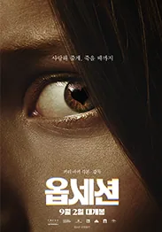
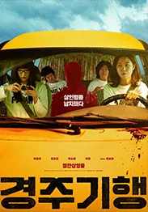
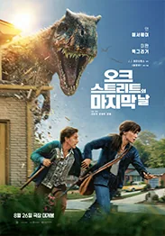
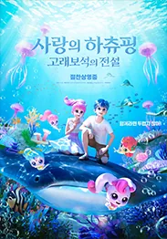
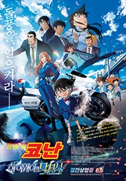
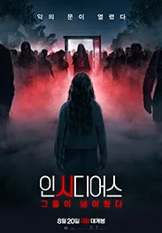
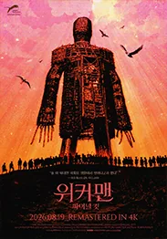
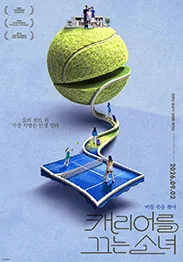
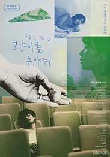
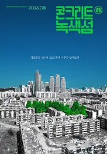

9월 1주차 극장가는 크리스토퍼 놀란 감독의 대작이 4주 연속 흥행 정상을 굳건히 지킨 가운데, 공포영화와 가족영화 등 국내외 신작들이 차트에 진입하며 순위권 변동을 나타낸 한 주였다.
1위는 4주 연속 1위를 지키고 있는 크리스토퍼 놀란 감독의 신작 〈오디세이〉다. 트로이 전쟁 영웅 오디세우스(맷 데이먼)가 고향 이타카로 돌아가는 길에 마주하는 신들과 괴물들의 방해와 험난한 여정을 그린 대서사 액션 블록버스터다. 이번 주 116만 명의 관객을 동원하고 134억 원의 매출을 기록했으며, 누적 관객 수 1,003만 명을 돌파했다.
2위는 역시 미국 액션 블록버스터 〈스파이더맨: 브랜드 뉴 데이〉다. <스파이더맨: 노 웨이 홈> 사건으로 모두에게 잊힌 피터 파커(톰 홀랜드)가 자신의 정체를 기억하는 의문의 적의 등장과 DNA 변이로 통제 불가능한 힘을 얻으며 더 깊은 혼란에 빠진 가운데, 소중한 이들을 지키기 위해 새로운 위협에 맞서는 내용이다. 이번 주 24만 명의 관객을 추가로 모으며 22억 원의 매출을 올렸고, 누적 관객 수는 879만 명이다.
3위는 9월 2일 개봉해 차트에 새롭게 진입한 미국 공포영화 〈옵세션〉이다. 무엇이든 이루어 주는 스틱 ‘원 위시 윌로우’에 소원을 빈 그날 밤 이후, 연인이 된 두 남녀의 끔찍한 사랑을 다룬 이야기를 그린 영화다. 개봉 첫 주 18만 명의 관객을 모으며 20억 원의 매출을 기록했다.
4위는 한국영화 〈경주기행〉으로, 수학여행에서 돌아오지 못한 막내딸 '경주'를 위해, 8년의 기다림 끝에 '죽이는' 여행을 떠난 네 모녀의 가족 복수극이다. 이번 주 11만 명의 관객을 동원하며 10억 원의 매출을 올렸고, 누적 관객 수는 30만 명이다.
5위는 9월 2일 개봉한 한국영화 〈비광〉이다. 화려하게 살던 스타 부부가 뜻밖의 사건에 휘말려 모든 것을 잃고 나락으로 떨어진 뒤, 소중한 가족을 되찾기 위해 분투하는 내용을 담았다. 류승룡과 하지원이 주연을 맡았으며, 개봉 첫 주 7만 명의 관객을 모아 6억 원의 매출을 기록했다.
9월 1주차 흥행 TOP10
오디세이
개봉일 2026-08-05
매출액 134억 원
관객수 116만 명

스파이더맨: 브랜드 뉴 데이
개봉일 2026-07-29
매출액 22억 원
관객수 24만 명

옵세션
개봉일 2026-09-02
매출액 20억 원
관객수 18만 명

경주기행
개봉일 2026-08-26
매출액 10억 원
관객수 11만 명
비광
개봉일 2026-09-02
매출액 6억 원
관객수 7만 명

싱 어게인
개봉일 2026-09-02
매출액 5억 원
관객수 5만 명

오크 스트리트의 마지막 날
개봉일 2026-08-26
매출액 2억 원
관객수 2만 명

사랑의 하츄핑: 고래보석의 전설
개봉일 2026-08-05
매출액 2억 원
관객수 2만 명

명탐정 코난: 하이웨이의 타천사
개봉일 2026-08-12
매출액 2억 원
관객수 2만 명

인시디어스: 그들이 넘어왔다
개봉일 2026-08-20
매출액 1억 원
관객수 1만 명
9월 1주차 독립·예술영화 극장가는 아일랜드, 일본, 영국, 프랑스, 한국 등 다채로운 국가의 작품들이 고르게 포진한 가운데, 감성 음악영화와 다큐멘터리 신작이 차트에 새롭게 진입하며 상위권 순위 변동을 나타낸 한 주였다.
1위는 9월 2일 개봉해 차트 정상에 오른 아일랜드 음악영화 〈싱 어게인〉이다. 〈원스〉, 〈비긴 어게인〉으로 사랑 받은 존 카니 감독의 신작으로, 팝스타의 꿈을 접은 무명 축가 가수 릭과 위기에 처한 팝스타 대니가 우연히 만나 단 하나의 노래를 완성하며 벌어지는 여정을 그렸다. 개봉 첫 주 5만 5천 명의 관객을 모으며 5억 2천만 원의 매출을 기록했다.
2위는 7월 말 개봉 이후부터 독립예술영화 극장가에서 화제의 다큐멘터리로 입소문을 낳고 있는 일본영화 〈어떻게 해야 했을까?〉다. 조현병 증상을 보이는 누나를 가족이라는 이름으로 현관문에 자물쇠를 채워 둔 부모와 그 가족의 시간을 20여 년간 담아낸 남동생의 사적인 기록을 다뤘으며, 누적 관객 수는 10만 명이다.
3위는 영국 공포영화 〈위커 맨: 파이널 컷〉이다. 외딴섬 '서머아일'에서 발생한 의문의 소녀 실종 사건을 조사하기 위해 파견된 경찰 '하위'가 섬 주민들의 기묘한 종교의식과 숨겨진 비밀을 마주하며 벌어지는 공포를 다룬 작품이다. 누적 관객 수는 2만 명이다.
4위는 뤽 베송 감독이 연출을 맡은 프랑스영화 〈드라큘라: 러브 테일〉이다. 사랑하는 연인을 되찾기 위해 신을 버리고 저주를 선택한 남자, 드라큘라가 ‘400년의 기다림' 끝에 다시 운명을 만나는 다크 판타지 로맨스다. 누적 관객 수는 1만 6천 명이다.
5위는 9월 2일 개봉한 한국 다큐멘터리 영화 〈사진의 얼굴〉이다. 1964년부터 60년간 한국 현대사의 굵직한 현장들을 10만 컷의 카메라 필름에 담아온 일본 포토저널리즘의 거장 구와바라 시세이의 삶과 기록을 조명했다.
9월 1주차 독립·예술영화 흥행 TOP10

싱 어게인
개봉일 2026-09-02
매출액 524백만 원
관객수 55천 명

어떻게 해야 했을까?
개봉일 2026-07-29
매출액 43백만 원
관객수 4천 명

위커 맨: 파이널 컷
개봉일 2026-08-19
매출액 48백만 원
관객수 4천 명
드라큘라: 러브 테일
개봉일 2026-08-26
매출액 40백만 원
관객수 4천 명

사진의 얼굴
개봉일 2026-09-02
매출액 26백만 원
관객수 3천 명

캐리어를 끄는 소녀
개봉일 2026-09-02
매출액 21백만 원
관객수 3천 명

다윗
개봉일 2026-07-10
매출액 24백만 원
관객수 3천 명
워페어
개봉일 2026-08-19
매출액 14백만 원
관객수 1천 명

고양이를 놓아줘
개봉일 2026-08-26
매출액 9백만 원
관객수 1천 명

콘크리트 녹색섬
개봉일 2026-08-19
매출액 6백만 원
관객수 1천 명
2026년 9월 1주차 극장가는 여름 성수기가 완전히 마무리되고 가을로 접어들며 전주 대비 전체 관객 수와 매출액이 모두 감소했다. 극장 전체 관객 수는 203만 명, 매출액은 218억 원으로, 전주(8월 4주차) 283만 명, 307억 원 대비 각각 80만 명, 89억 원 감소했다.
개봉 편수는 총 17편으로 전주(51편) 대비 34편 줄어든 가운데, 시장의 주도권은 외국영화가 지속해서 이어갔다. 외국영화는 총 9편이 상영되어 178만 명의 관객을 모았다. 이번 주 한국영화 관객 수와 비교하면 약 7.1배 많은 수치다. 매출액은 195억 원을 기록했다. 전주(250만 명, 275억 원) 대비 관객 수와 매출액은 각각 72만 명, 80억 원 감소했고, 외국영화 점유율(관객 수 기준) 역시 전주(88.4%) 대비 0.7%p 하락한 87.7%를 나타냈으나 여전히 높은 비중을 차지했다.
반면 한국영화는 관객 수 감소 속에서 점유율 상승세는 이어갔다. 한국영화는 8편이 상영되어 25만 명의 관객을 동원하고 24억 원의 매출을 올렸다. 전주(33만 명, 32억 원) 대비 관객 수와 매출액이 각각 8만 명, 8억 원으로 감소했으나, 한국영화 점유율은 전주(11.6%) 대비 0.7%p 상승한 12.3%를 기록했다.
최근 4주간의 전체적인 추이를 살펴보면 극장가는 8월 2주차 정점을 기록한 뒤 3주 연속 뚜렷한 하향 곡선을 그렸다. 8월 2주차 594만 명으로 최고치를 기록했던 관객 수는 8월 3주차 306만 명, 8월 4주차 283만 명에 이어 9월 1주차에는 203만 명까지 줄어들었다. 점유율 측면에서는 외국영화가 8월 3주차(92.8%) 정점 이후 소폭 완화되었으나 여전히 80%대 후반의 높은 점유율을 점하고 있는 가운데, 한국영화는 8월 3주차(7.2%) 최저점을 찍은 이후 8월 4주차(11.6%), 9월 1주차(12.3%)로 2주 연속 점유율 반등 흐름을 이어가고 있다.
최근 4주간 극장 매출 및 한국영화 점유율 (2026년 9월 7일 조회 기준)
| 기간 | 전체 | 한국 | 외국 | ||||||||
|---|---|---|---|---|---|---|---|---|---|---|---|
| 개봉편수 | 매출액(억 원) | 관객수(만 명) | 개봉편수 | 매출액 | 관객수 | 점유율 | 개봉편수 | 매출액 | 관객수 | 점유율 | |
| 9월 1주차 | 17 | 218 | 203 | 8 | 24 | 25 | 12.3% | 9 | 195 | 178 | 87.7% |
| 8월 4주차 | 51 | 307 | 283 | 7 | 32 | 33 | 11.6% | 44 | 275 | 250 | 88.4% |
| 8월 3주차 | 12 | 331 | 306 | 6 | 21 | 22 | 7.2% | 6 | 310 | 284 | 92.8% |
| 8월 2주차 | 26 | 627 | 594 | 11 | 58 | 61 | 10.2% | 15 | 569 | 533 | 89.8% |